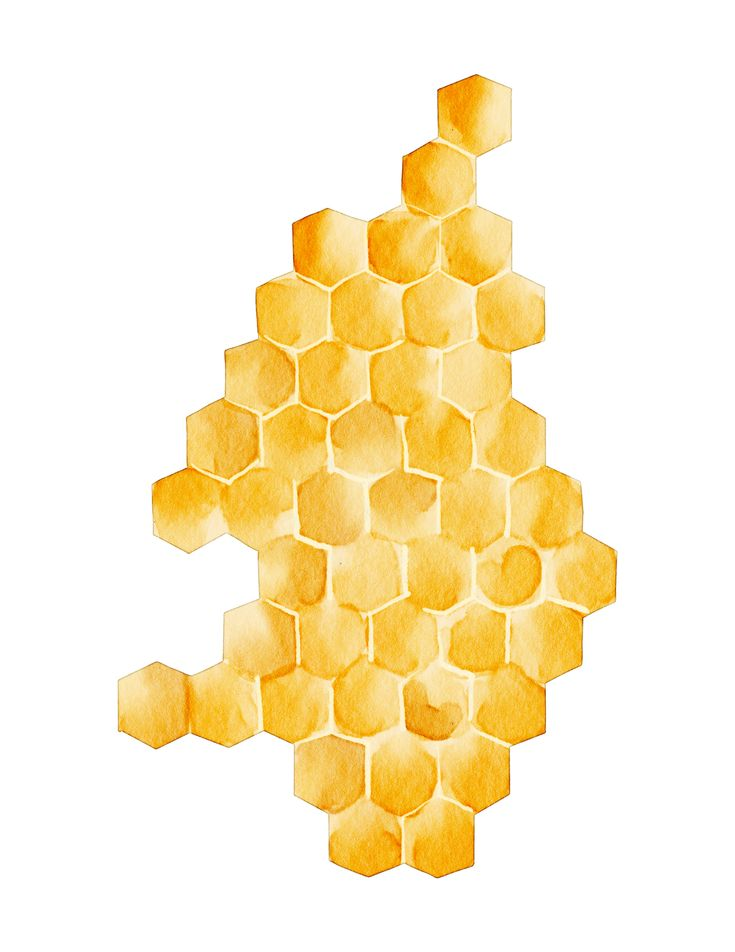

Sobre o projeto
Mais tela, mais imagem e mais ritmo visual
Este projeto foi criado para aproximar as pessoas do universo das abelhas de um jeito mais bonito, simples e interessante. Aqui voce encontra especies conhecidas, curiosidades e imagens que ajudam a entender melhor o papel desses insetos na natureza.
Mais do que um catalogo visual, este site funciona como um convite para observar, aprender e valorizar as abelhas brasileiras, mostrando como cada especie tem seu proprio encanto e sua importancia para os ecossistemas.
